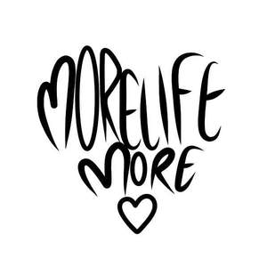

Trade Mark Journal No.2025/011 14 March 2025
UK00004165073 25 February 2025 (25,41)

- Class 25
- Shirts; Short-sleeve shirts; T-shirts; Tee-shirts; Hooded sweat shirts; Casual shirts; Printed t-shirts; Sweatshirts; Shorts [clothing]; Jackets (Stuff -) [clothing]; Hoodies; Denims [clothing]; Trousers shorts; Sweat pants; Sweat shorts; Jeans; Sweaters; Clothes; Denim pants; Sweatpants; Denim jackets; Tops [clothing]; Bottoms [clothing]; Socks; Men's socks; Socks for men; Tops; Denim jeans; Blue jeans; Trousers; Hats; Beanie hats; Baseball hats; Beanies; Caps [headwear]; Caps being headwear; Scarfs; Hoods [clothing]; Jumpers [sweaters]; Hooded sweatshirts; Short-sleeved T-shirts; Jackets [clothing]; Sweat shirts; Jackets; Jumpers; Shorts; Fleece shorts; Gym shorts.
- Class 41
- Music concerts; Recording of music; Music recording; Music publishing and music recording services; Music performances; Production of music concerts; Presentation of music concerts; Live music concerts; Performance of music; Pop music concerts (Organisation of -); Production of music; Music production; Music concert services; Music publishing; Publishing of music; Performance of music and singing; Organisation of music concerts; Production of sound and music recordings; Performing of music and singing; Live music performances; Publication of music; Music recording studio services; Live music services; Music mixing services; Production of music shows; Live music shows; Music performance services; Music production services; Music publishing services; Provision of live music; Musical entertainment; Live musical concerts; Presentation of musical concerts; Sound recording and video entertainment services; Musical concert services; Entertainment in the form of recorded music (Services providing -); Song publishing; Production of musical recordings; Musical performances.
Joseph Jack Murphy